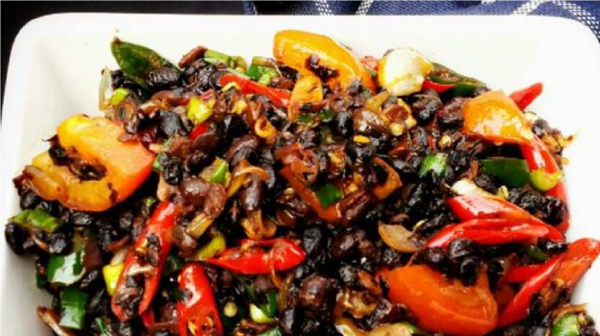

| Ampas kecap merupakan limbah atau sisa buangan hasil proses pembuatan kecap yang berbahan dasar kedelai hitam. Ampas kecap memiliki protein yang cukup tinggi berkisar 20 – 30%. Untuk membuat kecap dibutuhkan bahan baku berupa biji kedelai. Ampas kecap dihasilkan sebesar 59,7% dari bahan baku kedelai. |  |